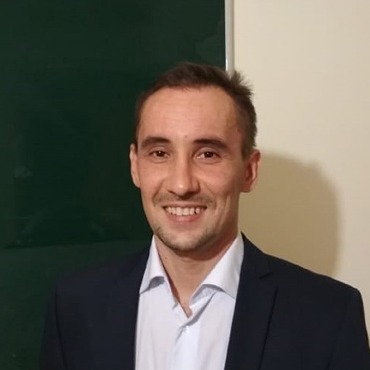
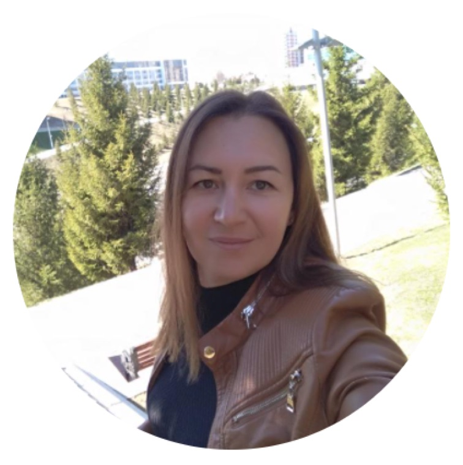
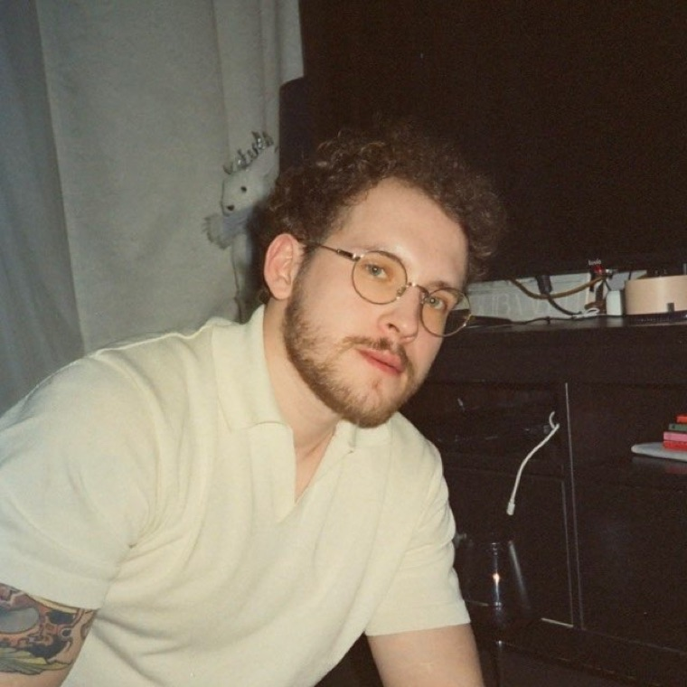
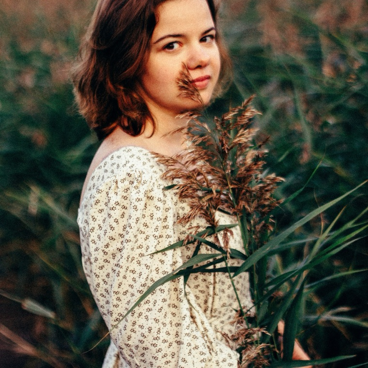
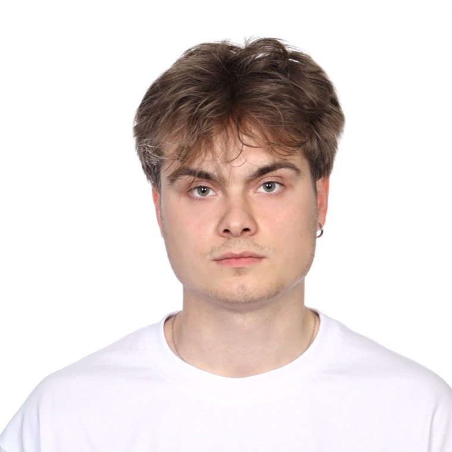
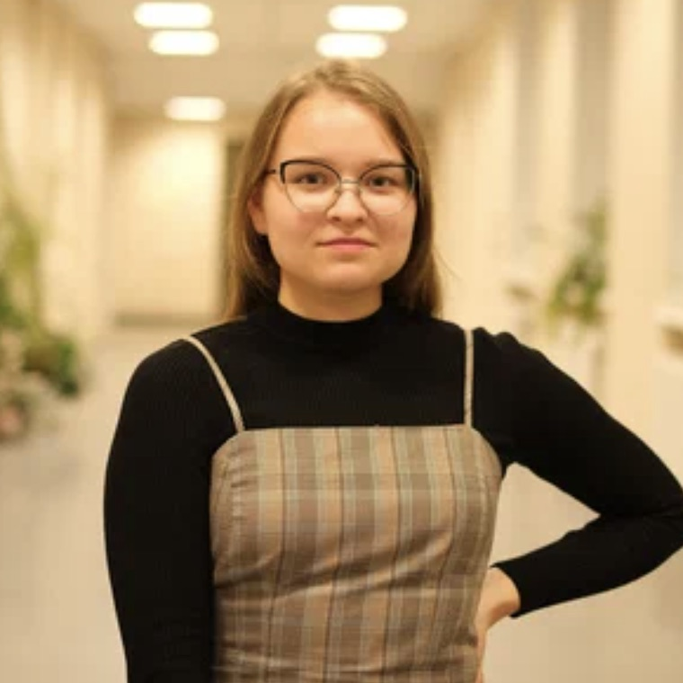
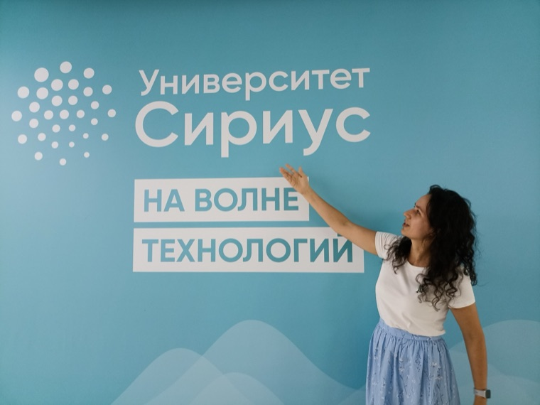
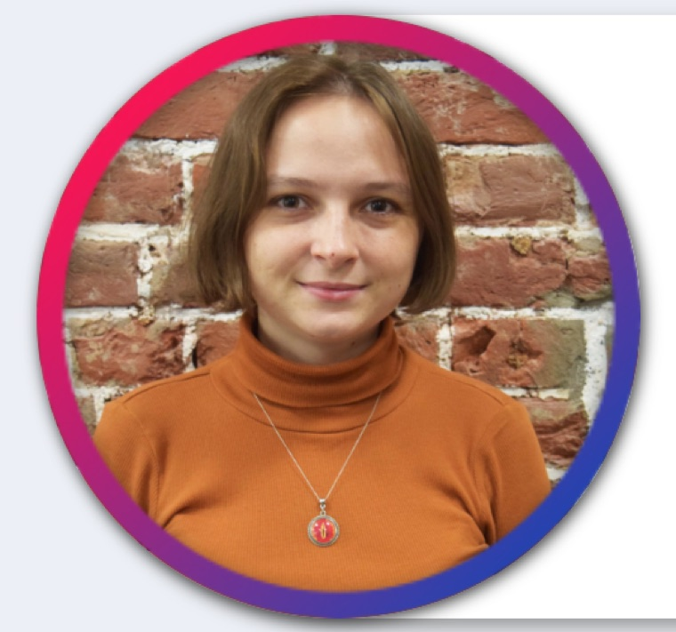
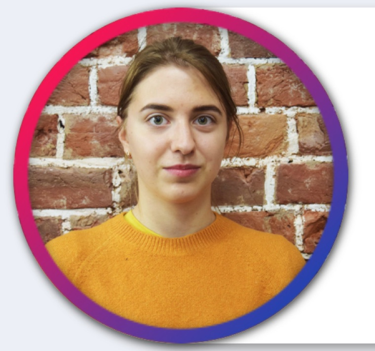
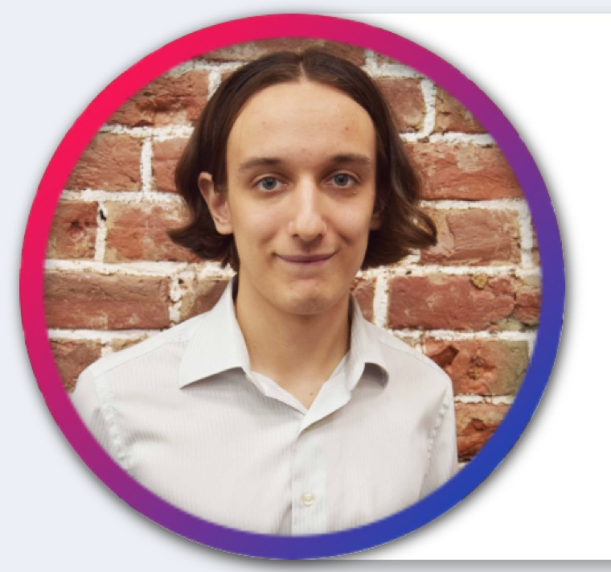

People
The group
A small team combining population genetics, medical genetics, functional genomics and microbiome analysis, distributed between Saint Petersburg and Tartu.

Principal Investigator
Bayazit Yunusbayev, PhD
I am interested in understanding the evolutionary history of modern humans and how this shaped the diversity of phenotypes observed in contemporary populations. My current research focus is to understand how human evolutionary history shaped disease-related traits. Specifically, how pathogen-driven selection shaped immune-related phenotypes and autoimmune diseases. For this, I combine human genomics and wet-lab experiments on human cells.
Google Scholar profile · yunusbb@gmail.com

Senior researcher
Milyausha Yunusbaeva, PhD
My research focuses on human host factors (genes and gut microbes) that impact susceptibility to tuberculosis infection, disease progression, and treatment outcome. Tuberculosis develops in a susceptible host and a highly adapted mycobacterium strain that constantly evolves to evade treatment modalities.

PhD student
Sergei Ryakhovsky
Sergei is interested in understanding the evolution of genes underlying autoimmune conditions. His research integrates techniques from population genetics and medical genetics. He integrates multiple layers of genome annotations: signals of selection, fine-mapped causal SNPs for autoimmune conditions, and various layers of functional annotations (chromatin accessibility, eQTLs, etc).

MSc student
Anastasia Kislova, MSc
Anastasia is interested in understanding molecular mechanisms underlying autoimmune conditions. Her work is focused on fine-mapping causal SNPs for autoimmune conditions by integrating functional annotations. She defended her MSc thesis on 18 June 2025.

MSc student
Alexander Klochev
Alexander is interested in reconstructing the genetic history of Russians and related Slavic-speaking populations using techniques based on Ancestral Recombination Graphs. More broadly, he is interested in how natural selection shaped the distribution of immune gene variants across populations and how genetic variation translates into similarities at the protein structure level.

MSc student
Alena Kuznetsova
Alena is interested in reconstructing the genetic history of Russians by combining ancient DNA techniques and novel tools based on Ancestral Recombination Graphs.
Group alumni
Past MSc students, with the topic of their thesis project.

Dina Sabirova
MSc in Applied Mathematics and Informatics (2023–2024), Sirius University of Science and Technology, Sochi. Supervised by Mikhail Rayko; co-supervised by Bayazit Yunusbayev. Project: functional capacity of Megasphaera elsdenii inferred by comparative genomics.

Anna Bogdanova
Now — PhD student, Tübingen, Germany
MSc (2021–2023), Southern Federal University, Rostov-on-Don. Background in molecular biology and microbiology. Project: the human gut microbiome in autoimmune disease.

Darya Terentyeva
Now — Researcher, Alkor Bio Group
MSc (2021–2023), Saint Petersburg State Chemical Pharmaceutical University. Project: Mycobacterium tuberculosis phylogeny and the role of the host microbiome in tuberculosis susceptibility.

Grigory Sergeev
Now — Researcher, Saint-Petersburg Pasteur Institute
MSc (2021–2023), Moscow Timiryazev Agricultural Academy. Project: reconstructing metabolic pathways from genes inferred from bulk metagenomic sequences of the human gut microbiome.
Join us. We supervise BSc and MSc projects at Saint Petersburg State University and co-supervise projects with partner institutions. Write to yunusbb@gmail.com with a short statement of interest and your CV.